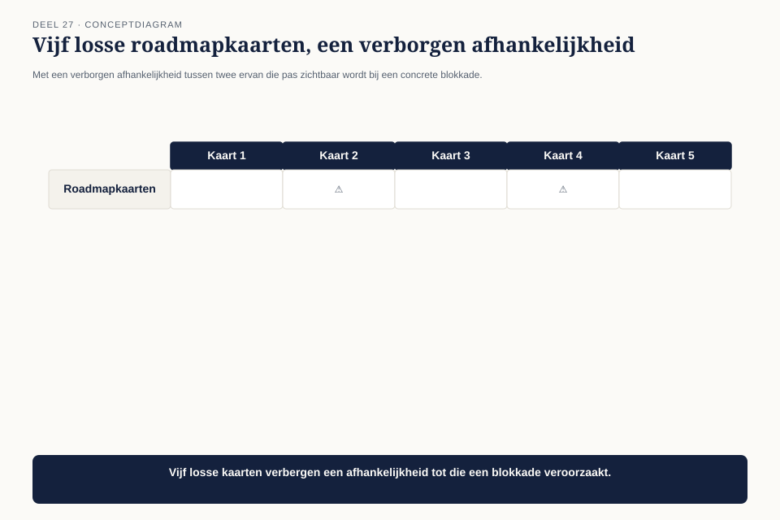
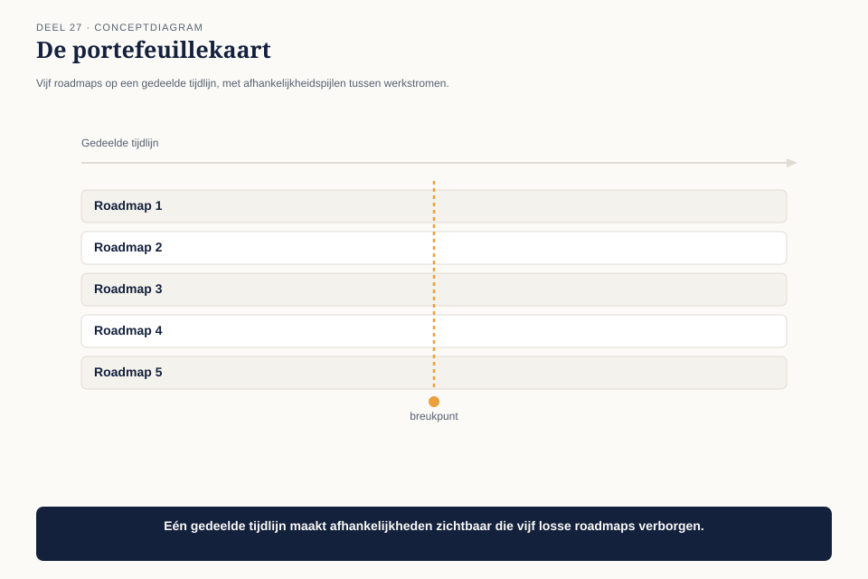
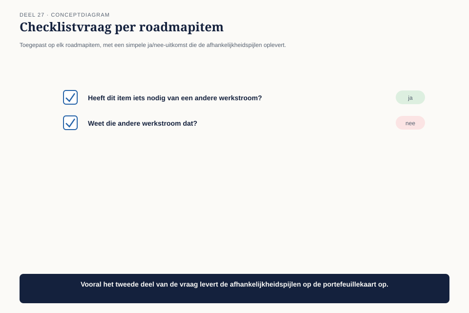
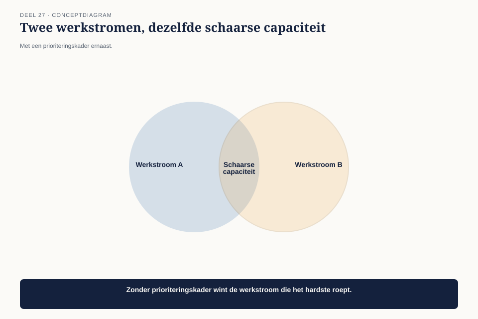

Deel 27 — Strategische breedte
Niveau 3 — Board-gereedheid en praktijkleiderschap | Deelnemersreader BTABoK-cursus, Ductus
27.1 Waar dit deel over gaat
Deel 19 gaf Mutatieplatform een roadmap en een licht governancemodel — voor één programma. De Wtp-overgang bestaat uit vijf parallelle werkstromen, die stuk voor stuk hun eigen roadmap en risico’s hebben, maar samen één transformatie vormen. Dit deel gaat over het niveau waarop CITA-P uiteindelijk toetst: niet de beheersing van één programma, maar samenhang over meerdere programma’s heen — een portefeuille van portefeuilles.
Aan het eind van dit deel kun je:
- roadmaps van meerdere werkstromen samenvoegen tot één portefeuillebeeld zonder de eigen roadmap van elke werkstroom te verdringen;
- een afhankelijkheid tussen werkstromen herkennen vóórdat hij een probleem wordt;
- prioriteringskeuzes maken wanneer twee werkstromen om dezelfde schaarse capaciteit vragen.
27.2 Vijf roadmaps, geen overzicht
Elke Wtp-werkstroom heeft, dankzij het instrumentarium uit deel 19, zijn eigen roadmapkaart met drie horizonnen. Wat ontbreekt, is een manier om die vijf roadmaps naast elkaar te leggen. Wanneer de werkstroom “Herberekening” een afhankelijkheid heeft van een component die de werkstroom “Toezichtrapportage” pas over twee kwartalen oplevert, ontdekt niemand dat totdat “Herberekening” er daadwerkelijk op vastloopt.

Dit is dezelfde soort probleem als het rekendatumincident uit deel 12 — twee onderdelen die onafhankelijk correct werken, maar niet op elkaar zijn afgestemd — nu op het niveau van complete programma’s in plaats van twee schermen.
27.3 De portefeuillekaart
De eerste competentie voegt een laag toe boven de individuele roadmaps: een portefeuillekaart die de vijf werkstromen naast elkaar legt en de afhankelijkheden tussen hen zichtbaar maakt.

Het instrument bevat geen nieuwe informatie — het is een andere weergave van wat de vijf werkstromen al vastleggen, plus één toevoeging: een expliciete pijl bij elke plek waar de vastgelegde horizon van de ene werkstroom afhangt van de vastgelegde horizon van een andere.
Bij Wtp levert dit zes afhankelijkheden op, waarvan er twee al bekend waren en vier nieuw aan het licht komen — waaronder de blokkade tussen “Herberekening” en “Toezichtrapportage” uit 27.2, die nu drie kwartalen vóór het moment wordt gezien in plaats van op het moment zelf.
Verband met deel 19. De portefeuillekaart vervangt de roadmapkaart van elke werkstroom niet — het is een extra laag erboven, net zoals het kwartaalgremium uit deel 19 de kaders bewaakt zonder het ontwerp van individuele teams over te nemen.
27.4 Afhankelijkheden vroeg herkennen
De tweede competentie leert een concrete vraag die de portefeuillekaart bruikbaar maakt in plaats van decoratief: bij elk item in elke roadmap, of het afhankelijk is van iets uit een andere werkstroom, en zo ja, of die andere werkstroom dat al weet.

De vraag: “Heeft dit item iets nodig van een andere werkstroom, en weet die werkstroom dat?” Het tweede deel van de vraag is net zo belangrijk als het eerste — een afhankelijkheid die door de leverende werkstroom niet als zodanig is herkend, is een risico dat sluimert tot het te laat is, exact zoals bij “Toezichtrapportage” die niet wist dat “Herberekening” op haar wachtte.
Dit wordt onderdeel van het kennisdelingsritme uit deel 25: bij elke sessie meldt de presenterende werkstroom niet alleen wat ze hebben geleerd, maar ook of er nieuwe afhankelijkheden met andere werkstromen zijn ontstaan.
27.5 Prioriteren tussen werkstromen
De derde competentie behandelt het lastigste scenario: twee werkstromen die tegelijk om dezelfde schaarse capaciteit vragen — bijvoorbeeld de enige architect binnen de praktijk met diepgaande kennis van het oude polissysteem (een echo van de benuttingsvraag uit deel 14, nu tussen werkstromen in plaats van tussen teams).

Het prioriteringskader hergebruikt de investeringstypen uit deel 3 en 16, nu toegepast op de vraag welke werkstroom eerst gaat:
| Vraag | Uitkomst |
|---|---|
| Is een van de twee aanvragen verplicht (een wettelijke deadline)? | die gaat eerst, zonder discussie |
| Zo niet: welke aanvraag beschermt tegen het grootste risico (hoogste ongedekte kans × impact)? | die gaat als tweede |
| Zo niet: welke aanvraag levert het meeste rendement op binnen de kortste tijd? | die gaat als derde |
Bij Wtp blijkt de aanvraag van “Toezichtrapportage” verplicht — een wettelijke rapportagedeadline — en die krijgt voorrang op de aanvraag van “Herberekening,” die weliswaar urgenter aanvoelt maar geen harde deadline heeft. Dit besluit wordt, net als elk ander architectuurbesluit in deze cursus, vastgelegd in het gedeelde besluitenlogboek, met de motivering expliciet gekoppeld aan het prioriteringskader.
27.6 Het effect op de Wtp-overgang
Met de portefeuillekaart, de afhankelijkheidsvraag, en het prioriteringskader op hun plek, is Claudette’s praktijk voor het eerst in staat om de vraag te beantwoorden die de raad van bestuur in deel 26 stelde zonder het letterlijk te vragen: niet alleen hoe elke werkstroom er individueel voor staat, maar of de vijf werkstromen sámen op koers liggen. Dat onderscheid — de som van vijf gezonde delen versus een gezond geheel — is precies waar strategische breedte om draait.
27.7 Kernbegrippen
| Begrip | Betekenis in deze cursus |
|---|---|
| Portefeuillekaart | een extra laag boven individuele roadmaps, met expliciete afhankelijkheidspijlen tussen werkstromen |
| De afhankelijkheidsvraag | heeft dit item iets nodig van een andere werkstroom, en weet die werkstroom dat? |
| Prioriteringskader tussen werkstromen | verplicht eerst, dan het grootste ongedekte risico, dan het snelste rendement — dezelfde investeringstypen als deel 3 en 16, nu tussen programma’s |
Volgende delen van niveau 3 vervolgen met risicobeheer op praktijkschaal, de gedragscode voor senior architecten, en ten slotte een capstone waarin het complete board-dossier voor CITA-S/P wordt samengesteld en verdedigd.